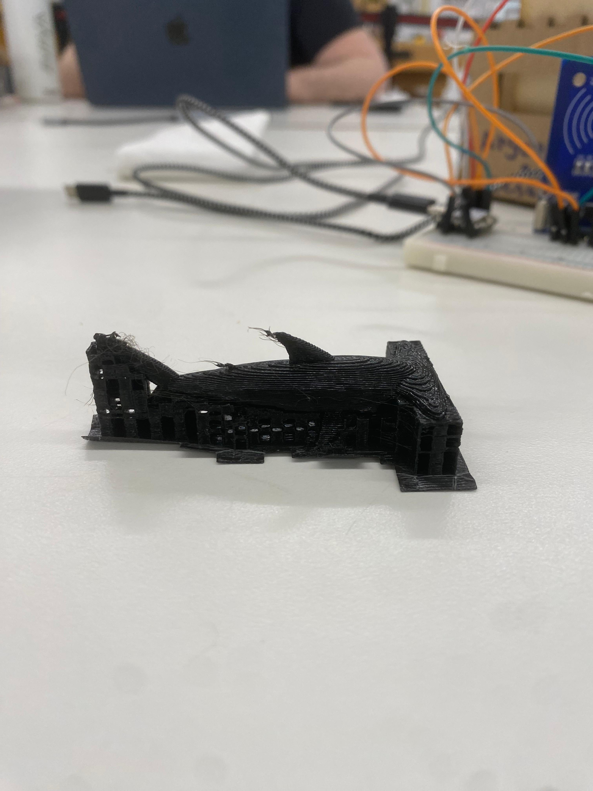
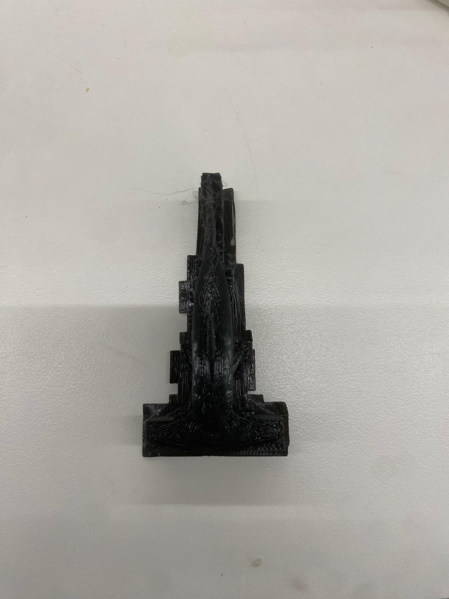

THE 3D MODEL:
This week we were tasked with making a 3D model .It either coulld be made for fun or it was useful in your project .The previous night I had seen JAWS again with friends and decide to make a shark.But added a bit of my twist to it and made a hammerhead shark.I have named it SIR BOOBY .For his continued dedication to answer my stupid queries .
Here is the link for the file:
Download my STL file
Presenting SIR BOBBY THE SHARK:

